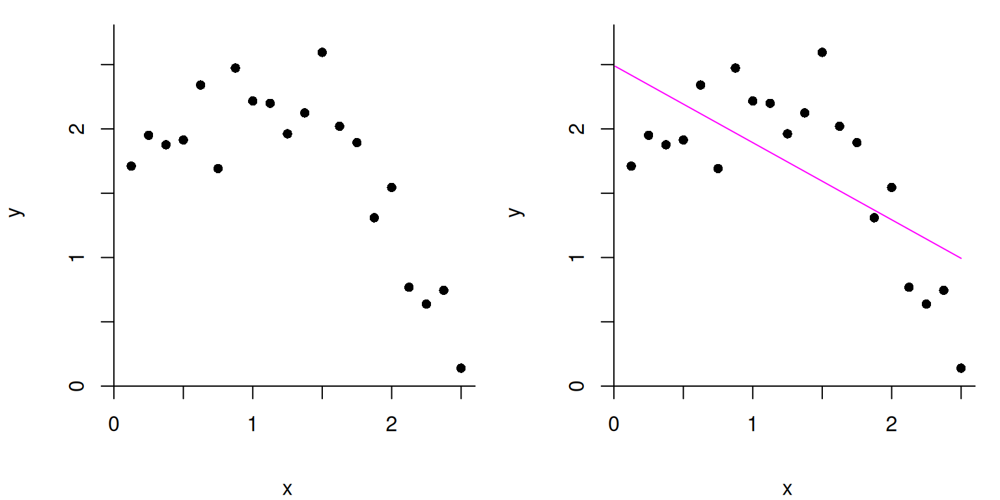
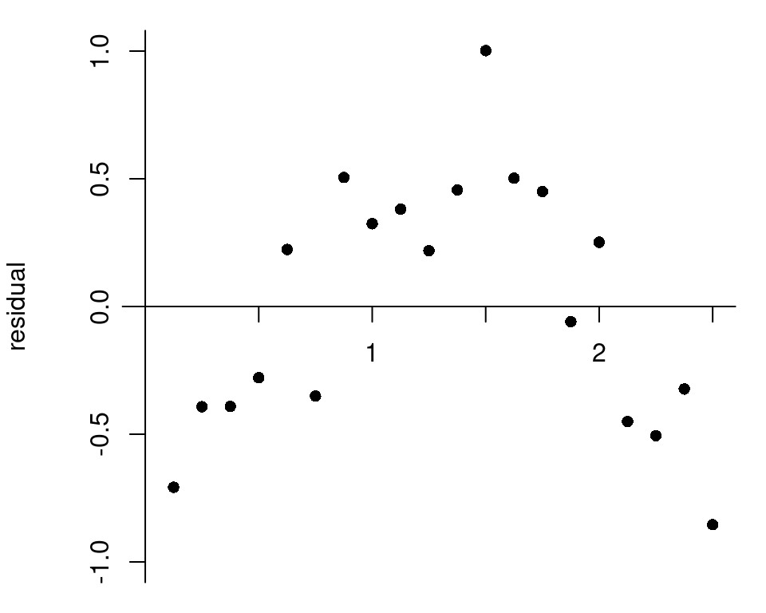
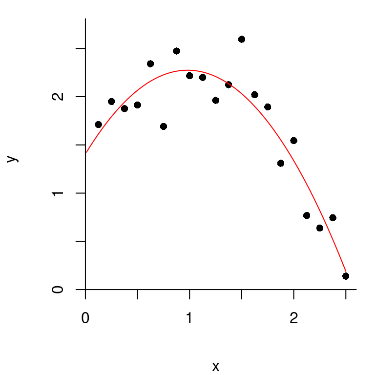
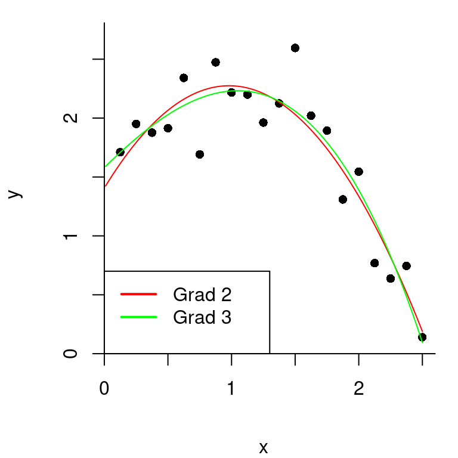
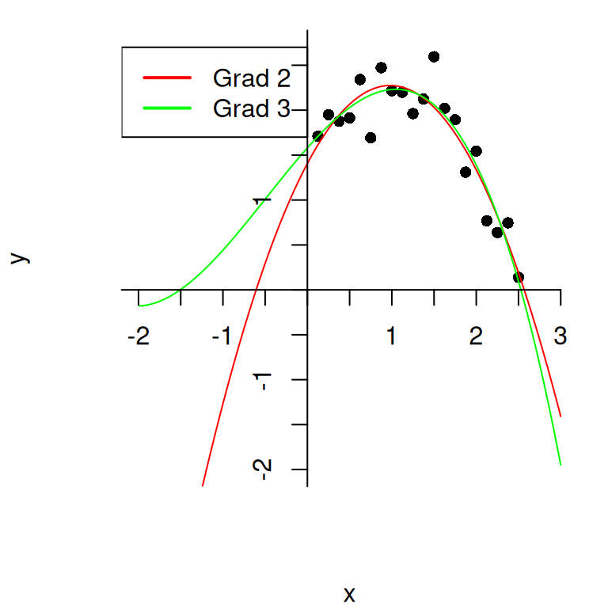
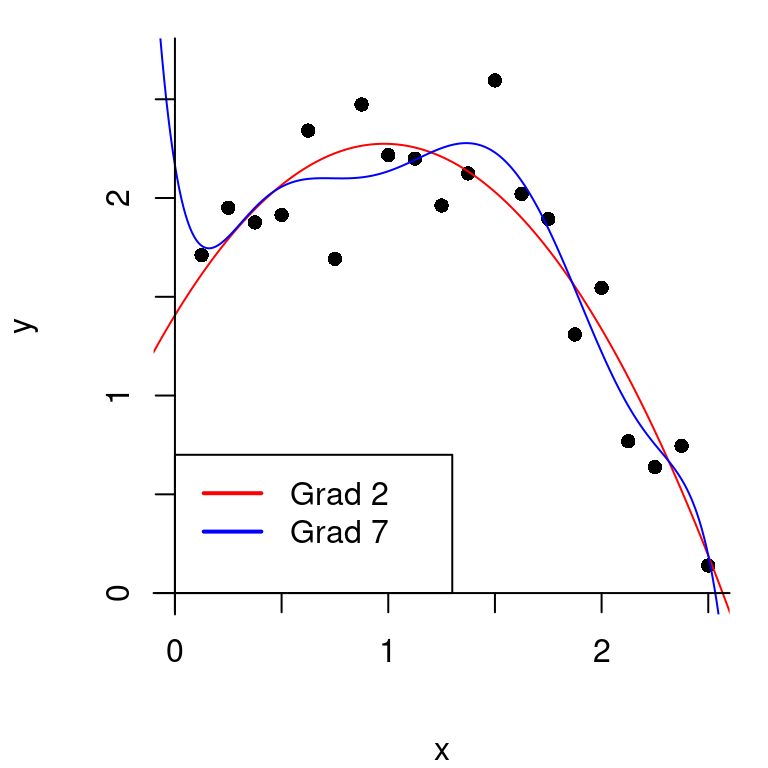
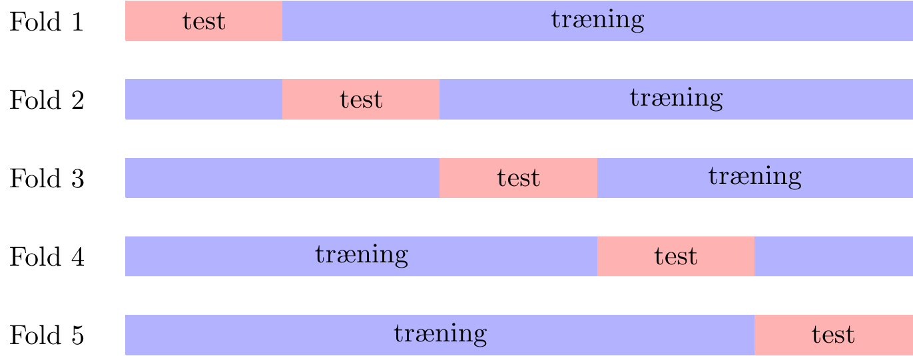

| \(x\) | \(y\) |
|---|---|
| 0.125 | 1.71 |
| 0.25 | 1.95 |
| 0.375 | 1.877 |
| 0.5 | 1.914 |
| 0.625 | 2.341 |
| 0.75 | 1.692 |
| 0.875 | 2.473 |
| 1 | 2.217 |
| 1.125 | 2.199 |
| 1.25 | 1.962 |
| 1.375 | 2.125 |
| 1.5 | 2.595 |
| 1.625 | 2.021 |
| 1.75 | 1.894 |
| 1.875 | 1.309 |
| 2 | 1.545 |
| 2.125 | 0.7685 |
| 2.25 | 0.638 |
| 2.375 | 0.7456 |
| 2.5 | 0.1396 |
Overfitting, modeludvælgelse og krydsvalidering
Hvordan vælger man den bedste model til beskrivelse af data? Skal man bare vælge den mest komplicerede? Eller kan der mon gå noget galt? Det handler overfitting og krydsvalidering om.
Mere præcis handler denne note om, hvad man kan gøre, når man har flere forskellige modeller for data at vælge imellem og gerne vil vælge den bedste. Noten introducerer først polynomiel regression, der bruges som gennemgående eksempel. Mod slutningen diskuteres, hvordan de samme principper kan bruges i forbindelse med nogle af de andre algoritmer, der er gennemgået her på siden.
VIDEO: Introduktion
Herunder finder du en kort video, som introducerer noten.
Polynomiel regression
Lineær regression
Fra gymnasieundervisningen kender I lineær regression. Lad os sige, at vi har datapunkter \((x_i,y_i)\), hvor \(i=1,2,\ldots,n\). Vi vil gerne finde den rette linje, der bedst beskriver punkterne. I denne note kalder vi linjens skæring for \(a_0\) og hældningen for \(a_1\). Linjen har altså funktionsforskriften1
1 Du er vant til, at forskriften for en lineær funktion er på formen \(f(x)=ax+b\). Men lige om lidt viser skrivemåden \(f(x)=a_0+a_1x\) sig nyttig. I forhold til det, du kender, svarer det til, at \(a_0=b\) og \(a_1=a\).
\[f(x) = a_0 + a_1x.\]
For at finde den bedste linje til at beskrive vores data, søger vi de værdier \(a_0\) og \(a_1\), som gør, at \(a_0 + a_1x_i\) er så tæt på \(y_i\) som muligt. Vi vil altså gerne gøre afvigelserne fra linjen \(y_i - (a_0 + a_1 x_i)\) så små som muligt. Disse afvigelser svarer til det, man kalder for residualerne:
\[ r_i=y_i - (a_0 + a_1 x_i). \]
Som et samlet mål for hvor store disse afvigelser er for alle vores punkter, kigger vi på kvadratsummen af afvigelserne/residualerne
\[ \begin{aligned} E &= \left(y_1 - (a_0 + a_1 x_1) \right)^2 + \left(y_2 - (a_0 + a_1 x_2) \right)^2 + \cdots + \left(y_n - (a_0 + a_1 x_n) \right)^2 \\ & = r_1^2 + r_2^2 + \cdots + r_n^2 \end{aligned} \]
Nu er det lidt omstændeligt at skrive summen ud, som vi har gjort det ovenfor. I matematik vil man ofte skrive en sådan sum lidt mere kompakt ved hjælp af et summationstegn. Gør vi det, ser det sådan her ud:
\[ \begin{aligned} E &=\sum_{i=1}^n \left(y_i - (a_0 + a_1x_i) \right)^2 \\ &= \sum_{i=1}^n r_i^2 . \end{aligned} \]
Vi vælger så de værdier \(a_0\) og \(a_1\), der gør \(E\) mindst mulig. Dette kaldes mindste kvadraters metode.
Kvadratisk regression
Hvad nu hvis det slet ikke ligner, at der er en lineær sammenhæng, når vi tegner vores datapunkter ind i et koordinatsystem? Er det så overhovedet en god idé at forsøge med en lineær regression? På figur 1 ser det for eksempel ikke ud til at punkterne følger en ret linje.

I figur 2 ses et såkaldt residualplot. Her kan vi tydeligt se, at der er et mønster i den måde, residualerne fordeler sig omkring \(x\)-aksen. Det er altså tegn på, at en ret linje ikke er velegnet til at beskrive datapunkterne.

Når \(x\) ligger mellem 0 og 1, kunne der godt se ud til at være en svagt stigende tendens i figur 1, mens der ser ud til at være en aftagende tendens for \(x>1.5\). Det svarer til, at residualerne i figur 2 først er negative, så positive og dernæst negative igen. Den rette linje i figur 1 ser heller ikke ud til at følge punkterne særlig godt. Måske en parabel passer bedre på data?

Det ser ud til, at parablen i figur 3 følger datapunkterne langt bedre. Vi kunne således prøve at modellere \(y\) ved hjælp af et andengradspolynomium i \(x\). Lad \(f\) betegne andengradspolynomiet2
2 I gymnasiet skriver vi som regel forskriften for et andengradspolynomium på formen \(f(x)=ax^2+bx+c\). Med notationen, som vi bruger her, svarer det til, at \(a_0=c, a_1=b\) og \(a_2=a\).
\[ f(x) = a_0 + a_1x + a_2x^2 \]
med koefficienter \(a_0,a_1,a_2\in \mathbb{R}\).
Hvordan finder man så det andengradspolynomium, der bedst beskriver datapunkterne? Tilgangen er faktisk den samme som den mindste kvadraters metode, I kender fra lineær regression. Vi søger de værdier \(a_0, a_1\) og \(a_2\), som gør, at \(f(x_i)\) kommer så tæt på \(y_i\) som muligt. Vi vil altså gerne gøre forskellene \(y_i - f(x_i)\) så små som muligt. Vi kigger derfor på kvadratsummen af disse forskelle \[E=\sum_{i=1}^n (y_i - f(x_i))^2 = \sum_{i=1}^n \left(y_i - (a_0 + a_1x_i + a_2x_i^2)\right)^2.\] Vi søger så de værdier \(a_0,a_1\) og \(a_2\), der minimerer \(E\).
Gør man det i vores lille dataeksempel, fås netop den parabel, der er tegnet ind i koordinatsystemet i figur 3. Vi ser, at den beskriver data langt bedre end den rette linje.
Eksemplet viser vigtigheden af at tegne et residualplot for at vurdere anvendeligheden af den lineære model. Ellers kan man nemt komme til at overse en eventuel ikke-lineær sammenhæng.
Polynomiel regression generelt
Men hvordan kan vi nu vide, at et andengradspolynomium er det bedste til at beskrive data? Måske et polynomium af endnu højere grad ville være bedre? Man kan tilpasse tredje- og højeregradspolynomier til data på en helt tilsvarende måde. Vi kan for eksempel prøve at tilpasse et tredjegradspolynomium
\[ f(x) = a_0 + a_1x + a_2x^2 +a_3x^3. \]
Det bedste tredjegradspolynomium er igen det, der minimerer kvadratsummen \[E=\sum_{i=1}^n (y_i - f(x_i))^2 = \sum_{i=1}^n \left(y_i - (a_0 + a_1x_i + a_2x_i^2 + a_3x_i^3 )\right)^2.\] Grafen for det bedste tredjegradspolynomium er indtegnet med grøn for vores dataeksempel i figur 4. Andengradspolynomiet er indtegnet med rød til sammenligning.

Det er ikke så let at se forskel. De to polynomier ser ud til at passe nogenlunde lige godt på vores data. Men i figur 5 har vi zoomet ud på figuren ovenfor, og her er der en klar forskel:

Selv om der ikke var stor forskel på anden- og tredjegradspolynomiet på intervallet \([0;2,5]\) hvor alle \(x\)-værdierne i vores datasæt lå, så er der stor forskel, når vi kommer uden for dette interval. Man skal derfor passe på med at drage konklusioner om \(x\)-værdier uden for intervallet, hvor \(x\)-værdierne i vores datasæt ligger (det kaldes at ekstrapolere), da disse kan være meget følsomme over for, hvilken grad vi har valgt for vores polynomium. En fornuftig ekstrapolation vil derfor ofte kræve et forudgående kendskab til den sammenhæng, man modellerer ved valget af graden af polynomiet.
VIDEO: Polynomiel regression
I denne video forklarer vi, hvad polynomiel regression er.
Overfitting
Det er altså svært at afgøre med det blotte øje, om anden- eller tredjegradspolynomiet passer bedst til punkterne. Hvordan vælger vi så, hvad der er bedst? Som mål for, hvor tæt polynomiet er på data, kan vi kigge på kvadratsummen af afvigelserne \(y_i - f(x_i)\), altså \[E=\sum_{i=1}^n (y_i - f(x_i))^2.\] For andengradspolynomiet får vi en kvadratsum på \(E=1.14\), mens vi får \(E=1.10\) for tredjegradspolynomiet. Tredjegradspolynomiet kommer altså tættere på data end andengradspolynomiet. Det er på den anden side ikke så overraskende, for ved at sætte \(a_3=0\) i et tredjegradspolynomium fås et andengradspolynomium. Andengradspolynomier er altså specialtilfælde af tredjegradspolynomier. Vi vil derfor altid kunne tilpasse data mindst lige så godt med et tredjegradspolynomium som med et andengradspolynomium.
Kan det så altid betale sig at bruge et polynomium af højere grad? Lad os prøve med et syvendegradspolynomium. Vi søger \[f(x) = a_0 + a_1x + a_2x^2 +a_3x^3 + a_4x^4 + a_5x^5 +a_6x^6 +a_7x^7,\] der minimerer kvadratsummen \[E=\sum_{i=1}^n (y_i - f(x_i))^2 .\] Det bedste syvendegradspolynomium i vores lille dataeksempel er indtegnet med blå på figur 6 nedenfor:

Kvadratsummen er på kun \(E=0.90\), så umiddelbart virker det til at være en meget bedre model. Der er dog visse problemer. Det ses, at grafen bugter sig meget for at komme så tæt som muligt på datapunkterne. Dels virker det urealistisk, at den faktiske sammenhæng mellem \(x\) og \(y\) skulle være så kompliceret. Dels opstår der et problem, hvis vi kommer med nye datapunkter. I figur 7 er polynomierne fra før tegnet sammen med 20 nye datapunkter i grøn (som stammer fra den samme underliggende fordeling). Nu beskriver syvendegradspolynomiet pludselig ikke datapunkterne så godt længere.
Det, der sker her, er et eksempel på det fænomen, der kaldes overfitting: syvendegradspolynomiet havde tilpasset sig for godt til lige netop de sorte datapunkter. Når graden bliver for høj, begynder polynomiet at tilpasse sig nogle strukturer i data, som i virkeligheden bare skyldes tilfældigheder. Det fungerer rigtig godt til at beskrive det oprindelige data, men til gengæld er det dårligt til at forudsige nye dataværdier.
Jo højere grad man vælger, at polynomiet skal have, desto bedre kan man tilnærme data. Med \(n\) datapunkter (som alle have forskellige \(x\)-værdier), kan man faktisk altid finde et polynomium af grad \(n-1\), der går igennem alle datapunkterne, men nye datapunkter vil ikke nødvendigvis følger dette polynomium særlig godt.
Modelfleksibilitet
Det, vi så ovenfor, var, at vi havde forskellige modeller for data (polynomier af forskellig grad). Modellerne havde forskellig fleksibilitet (høj grad gjorde polynomiet meget fleksibelt). Når vi brugte en model med for lav fleksibilitet (lineær regression), kunne vi ikke tilpasse modellen godt nok til data. Når vi valgte en model med for høj fleksibilitet (polynomium af grad syv), opstod der problemer med overfitting, og modellen var ikke god til at beskrive nye data.
Det tilsvarende problem opstår også i andre sammenhænge, når man har flere forskellige modeller at vælge imellem. Nogle vil være for ufleksible til at beskrive data ordentligt. Andre vil være for fleksible og føre til overfitting. Så hvordan finder vi et godt kompromis? Det handler det følgende om.
VIDEO: Overfitting
I videoen herunder forklarer vi, hvad overfitting handler om.
Trænings- og testdata
Når vi har et datasæt og prøver at tilpasse en polynomiel regressionsmodel, siger vi, at vi træner modellen. Datasættet, vi bruger til at træne modellen, kaldes træningsdata. Som vi så ovenfor, indebærer det en risiko for overfitting, når vi træner modellen. Hvis vi kommer med et nyt datasæt af samme type, passer modellen ikke nødvendigvis særlig godt.
For at vurdere hvilken grad af polynomiet der passer bedst, kan vi se på, hvilken model der er bedst til at forudsige (også kaldet prædiktere) \(y\)-værdierne i et nyt datasæt. Det nye datasæt kaldes testdata. Lad os kalde testdatapunkterne for \((x_i^{test},y^{test}_i)\), hvor \(i=1,\ldots,m\). Man kan måle, hvor godt modellen forudsiger testdata ved at se på forskellene \(y_i^{test}-f(x_i^{test})\) mellem de observerede værdier \(y_i^{test}\) og dem, der forudsiges af polynomiet \(f(x_i^{test})\). Som samlet mål for, hvor godt modellen forudsiger testdata, beregner vi kvadratsummen af disse forskelle \[E^{test} = \sum_{i=1}^{m} \left(y_i^{test} - {f}\left(x_i^{test}\right)\right)^2.\] Man kalder \(E^{test}\) for tabsfunktionen.
I praksis har man typisk kun et datasæt til rådighed, og man er derfor nødt til først at dele data i to. Hele processen med at inddele data og først træne modellen og derefter teste den er, som følger:
Vælg en polynomiumsgrad \(p\).
Datasættet inddeles i to dele, én del der bruges som træningsdata, og én del der bruges som testdata. Vi vil betegne punkterne i træningsdata med \((x_i^{træn},y_i^{træn})\), \(i=1,\ldots,n\), og punkterne i testdata med \((x_i^{test},y_i^{test})\), \(i=1,\ldots,m\).
Vi træner modellen på træningsdatasættet og finder det \(p\)’te-gradspolynomium \[f(x)=a_0 + a_1 x + \dotsm + a_px^p\] der passer bedst på data. Mindste kvadraters metode benyttes til at bestemme \(a_0,\ldots,a_p\) som de tal, der minimerer \[E^{træn}(p)=\sum_{i=1}^{n} (y_i^{træn} - {f}(x_i^{træn}))^2.\] Det bedste polynomium kalder vi \(\hat{f}\).
Når vi har valgt funktionen \(\hat{f}\) på baggrund af træningsdataet, tester vi den på testdataet ved at beregne \[E^{test}(p)=\sum_{i=1}^{m} (y_i^{test} - \hat{f}(x_i^{test}))^2.\] Jo mindre \(E^{test}(p)\) er, des bedre passer \(\hat{f}\) på testdata.
Denne procedure kan gentages for forskellige værdier af polynomiumsgraden \(p\). Det \(p\), der giver den mindste værdi af \(E^{test}(p)\) svarer altså til den model, der er bedst til at forudsige værdierne i vores testdata, og vi vælger derfor at bruge dette \(p\).
I vores eksempel ovenfor får vi \(E^{test}(2)=1.82\) og \(E^{test}(7)=2.29\), når vi bruger de sorte datapunkter som træningsdata og de grønne datapunkter som testdata. Andengradspolynomiet er altså bedre end syvendegradspolynomiet til at forudsige testdata. Bemærk, at i begge tilfælde er \(E^{test}\) langt større end \(E^{træn}\), fordi modellen kun er tilpasset til træningsdata.
Når det bedst mulige \(p\) er valgt, kan man så træne modellen igen på alt dataet, både test- og træningsdata, for at få et mere præcist bud på det bedste polynomium. Dette er så vores endelige model for data. I vores eksempel finder man, at \(p=2\) giver lavest \(E^{test}\). Vi slår så de sorte og grønne datapunkter sammen til et datasæt og bruger dem til at finde det bedste andengradspolynomium. Det giver vores endelige model for sammenhængen mellem \(x\) og \(y\), som bliver \[ f(x) = 1.36 + 1.72x - 0.87x^2. \]
Krydsvalidering
Der er et problem med tilgangen ovenfor. Når man træner en model, er det altid en fordel at have så meget data som muligt, da man så har mulighed for at træne modellen meget præcist. Problemet er, at hvis man bruger det meste af data som træningsdata, er der ikke meget tilbage til at teste på, og vi risikerer overfitting.
Krydsvalidering løser dette problem på snedig vis ved at gentage trænings- og testproceduren flere gange. For at lave \(k\)-fold krydsvalidering deler man data op i \(k\) lige store og tilfældige dele. I første fold træner man modellen på alt data undtagen den første del og bruger første del som testdata. Det given en tabsfunktion \(E_1(p)\). Dette gentages så \(k\) gange, hvor man i den \(i\)’te fold bruger den \(i\)’te del af data som testdata og resten som træningsdata og får en tabsfunktion \(E_i(p)\). Idéen er illustreret i figur 8.

Som et samlet mål for, hvor god modellen er, bruges summen af tabsfunktionerne fra de \(k\) fold \[E(p)=E_1(p) + E_2(p) + \dotsm + E_k(p).\] Man vælger så den model, der giver den mindste værdi af \(E(p)\).
Fordelen ved krydsvalidering er, at man i hver fold bruger det meste af data til at træne modellen på. Samtidig bliver hvert datapunkt alt i alt brugt præcis én gang til at teste på. På den måde får man udnyttet data bedre end, hvis man bare laver en enkelt opdeling af data. Typisk vælger man \(k=5\) eller \(k=10\).
VIDEO: Trænings- og testdata samt krydsvalidering
I denne video forklarer vi, hvad trænings- og testdata er samt hvad krydsvalidering går ud på.
Krydsvalidering i andre sammenhænge
Krydsvalidering kan bruges i et væld af andre sammenhænge, hvor der skal vælges mellem flere forskellige prædiktionsmodeller.
Hvis det, der skal prædikteres, er en talværdi, kan man gøre som ovenfor. Algoritmen trænes på træningsdataet og bruges derefter til lave prædiktioner \(\hat{y}_i^{test}\), \(i=1,\ldots ,m\), af værdierne i testdatasættet. Disse sammenlignes med de faktiske værdier \(y_i^{test}\) ved at se på forskellene \(y_i^{test} - \hat{y}_i^{test}\) og beregne tabsfunktionen \[E^{test} = \sum_{i=1}^m(y_i^{test}-\hat{y}_i^{test})^2.\] Modellen med lavest \(E^{test}\) er bedst til at lave nye prædiktioner.
Hvis der derimod er tale om et klassifikationsproblem, hvor der skal prædikteres en klasse (fx mand/kvinde, rød blok/blå blok, almindelig mail/spam), skal man definere tabsfunktionen lidt anderledes. Som før trænes algoritmen på træningsdataet og derefter bruges den til lave prædiktioner af klasserne \(\hat{y}_i^{test}\), \(i=1,\ldots ,m\), i testdatasættet. Disse sammenholdes med de faktiske klasser, og vi bruger så fejlraten som tabsfuntion. Fejlraten angiver andelen af observationerne i testdataet, der bliver klassificeret forkert, det vil sige
\[ E^{test} = \frac{1}{m}\cdot (\text{antal fejlklassifikationer i testdata}). \tag{1}\]
Modellen med lavest \(E^{test}\) har færrest fejlklassifikationer og vælges derfor som den bedste.
Eksempler her fra siden, hvor krydsvalidering kan benyttes:
I forløbet Hvem ligner du mest sammenligner man et gråt punkt med alle punkter inden for en radius \(r\) for at forudsige farven. Det er ikke oplagt, hvordan man skal vælge denne radius. En mulighed er at komme med nogle gode bud \(r_1,\ldots, r_N\) på radier og så bruge krydsvalidering til at vælge den bedste. Én mulighed er at vælge \(k=n\). Så får man det, der kaldes leave-one-out krydsvalidering. I hver fold bliver der så kun et datapunkt i testdata, mens resten bruges som træningsdata. Det ene testdatapunkt farves gråt, og farven prædikteres ud fra de øvrige datapunkter, der ligger inden for den valgte radius. Prædiktionen sammenlignes med punktets rigtige farve. Dette gentages for alle datapunkter og fejlraten (1) beregnes til sidst. Vi vælger så den radius, der har lavest fejlrate.
I noten om Kunstige neurale nerværk beskrives det, hvordan man træner et kunstigt neuralt netværk. Men når man gør det, skal man på forhånd have besluttet sig for, hvor mange skjulte lag der skal være i netværket, og hvor mange neuroner, der skal være i hvert skjult lag. Jo flere skjulte lag og jo flere neuroner – desto større fleksibilitet. Her vil krydsvalidering være oplagt til at afgøre, hvor fleksibelt netværket skal være samtidig med, at man undgår overfitting.
Relaterede forløb
| Forløb | Kort beskrivelse |
|---|---|
| Overfitting og krydsvalidering med polynomiel regression |
No matching items